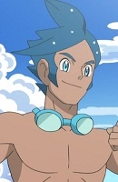
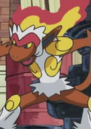

|
Brock |
- Pokemon
- Pokemon: Pikachu's Summer Vacation
- Pokemon Movie 1: The First Movie
- Pokemon Movie 2: The Power of One
- Pokemon: Pikachu's Rescue Adventure
- Pokemon: Pikachu and Pichu
- Pokemom Movie 3: Spell of the Unknown
- Pokemon: Pikachu's Winter Vacation
- Pokemon Movie 4: Pokemon 4Ever
- Pokemon: Pikachu's Winter Vacation 2000
- Pokemon Movie 5: Heroes - Latias and Latios
- Pokemon: Pikachu's Winter Vacation 2001
- Pokemon: Mewtwo Returns
- Pokemon Advanced Generations
- Pokemon Chronicles
- Pokemon Movie 6: Jirachi Wish Maker
- Pokemon Movie 7: Destiny Deoxys
- Pokemon Movie 8: Lucario and The Mystery of Mew
- Pokemon: The Mastermind of Mirage Pokemon
- Pokemon Movie 9: Pokemon Ranger and the Temple of the Sea
- Pokemon Diamond and Pearl
- Pokemon Movie 10: The Rise of Darkrai
- Pokemon Movie 11: Giratina and The Sky Warrior
- Pokemon Movie 12: Arceus and the Jewel of Life
- Pokemon Movie 13: Zoroark The Master of Illusions
- Pokemon Diamond and Pearl Specials
- Pokemon Black and White: Adventure in Unova
- Pokemon Best Wishes! Season 2: Dent and Takeshi! Gyarados's Outrage!!
- Pokemon Sun and Moon
- Pokemon Movie 22: Mewtwo Strikes Back Evolution
|
Brock is the former gym leader of Pewter City. He is aspires to become a top class breeder. He is experienced cook and caretaker by nature. Brock is a womanizer, but he is mature and wise. |
 |
Ikuya Asano |
|
Ikuya Asano is one of Youko's classmates and Yuka's boyfriend. He has known Youko since childhood. In the beginning, He keeps his deep set apathy under an eneegetic demeanor. He is apart of a group of shusei and works as accoutant. As the story process, his mental state goes unstablized. |
 |
Jean Havoc |
- Fullmetal Alchemist: Brotherhood
- Fullmetal Alchemist: Brotherhood - 4-Koma Theater
|
Jean Havoc is Second Lieutenant. He likes to smoke. Jean is a strict man of duty and a very by-the-book soldier. |
|  |
Marlon |
- Pokemon Black and White: Rival Destinies
|
Marlon is a gym leader of Humilau City's Gym. He specializes in water-type Pokemon. |
 |
Shinobu Morita |
- Honey and Clover
- Honey and Clover Specials
- Honey and Clover II
|
Shinobu Morita is an 8 year student in Sculpture Department. He goes on mysterious jobs and sleeps a lot from it. Morita is a very mysterious person. He does many random, crazy things for his personal enjoyment. Shinobu is a perceptive individual. He express his love of Hagu. |
 |
Tsukasa Morita |
|
Tsukasa Morita is Kaoru and Shinobu's father. He was a brillant engineer. He has a similiar personality to Shinobu. |
 |
Charmander |
|
Charmander is a starter Pokemon from the Kanto region. It been said that if its flame goes out Charmander dies. It is founded for more often in ownship of Trainers. Yuji Ueda voiced Ritche's Charmander. |
 |
Cyndaquil |
- Pokemon
- Pokemom Movie 3: Spell of the Unknown
- Pokemon Chronicles
- Pokemon Advanced Generations
- Pokemon Diamond and Pearl
|
Cyndaquil is a Pokemon from the Johto region. Cyndaquil is a starter that trainer can choose in the Johto region. The fire grows more powerful as Cyndaquil becames more angry or defensive. Yuji Ueda voiced Ash's Cyndaquil. |
 |
Gengar |
- Pokemon Movie 19: Volcanion and The Mechanical Marvel
|
Gengar is a Pokemon from the Kanto region. It the final form of Gastly and has the ability to mega evolve. Gengar enjoys playing prank practical jokes and casting curses on humans. Yuji Ueda voiced Alva's Gengar. |
|  |
Infernape |
- Pokemon Diamond and Pearl
- Pokemon Movie 13: Zoroark The Master of Illusions
|
Infernape is a Pokemon from the Sinnoh region. It is the final form of Chimchar. This quick Pokemon practices a unique kind of martial art that involves all of its limbs. Yuji Ueda voiced Ash's Infernape. |
 |
Pidgeotto |
|
Pidgeotto is a Pokemon from the Kanto region. It the evolved form of Pidgey. It has amazing vision, which helps with finding prey. Yuji Ueda voiced Benji's Father's Pidgeotto. |